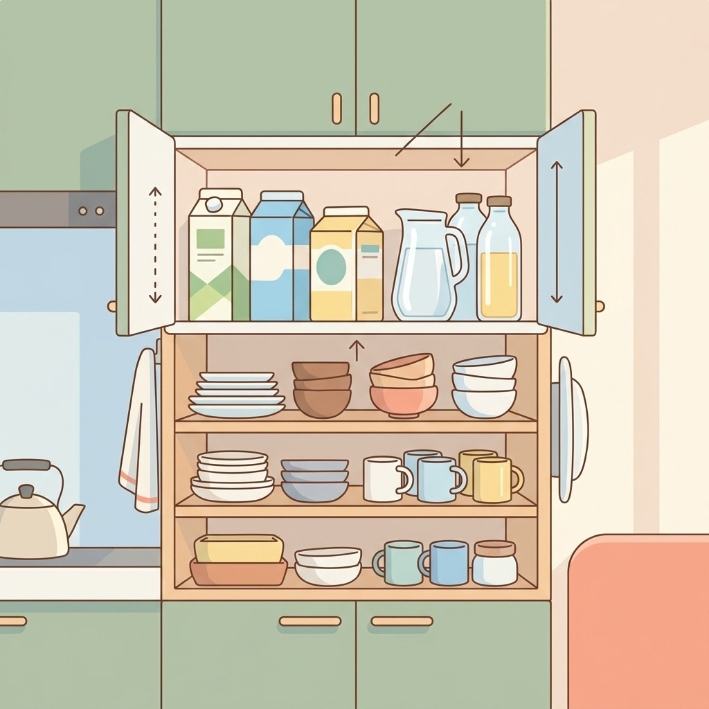
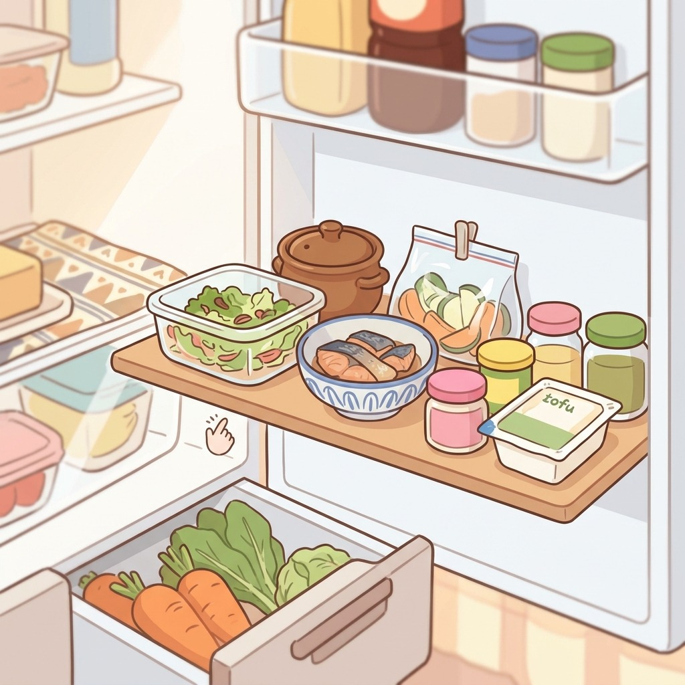
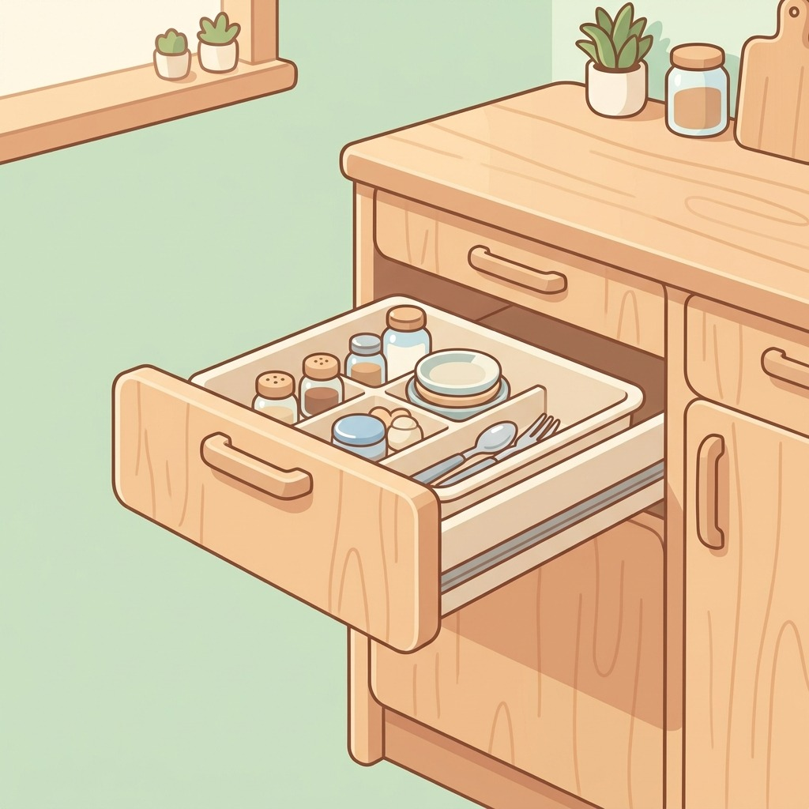
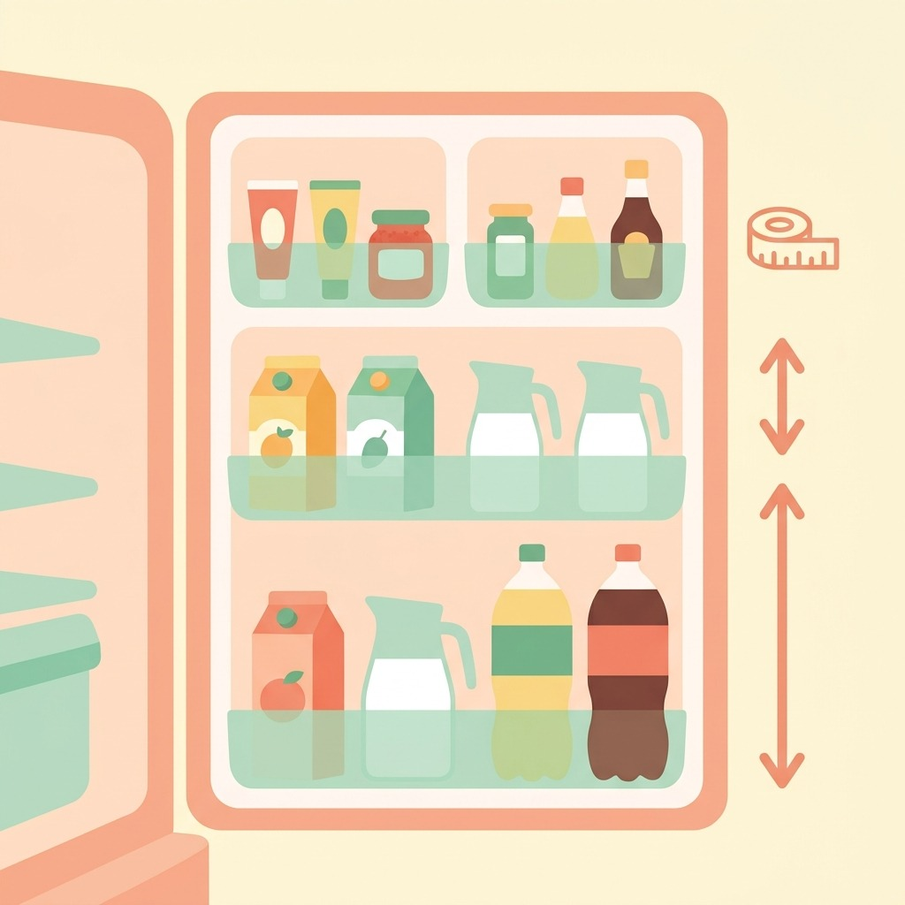
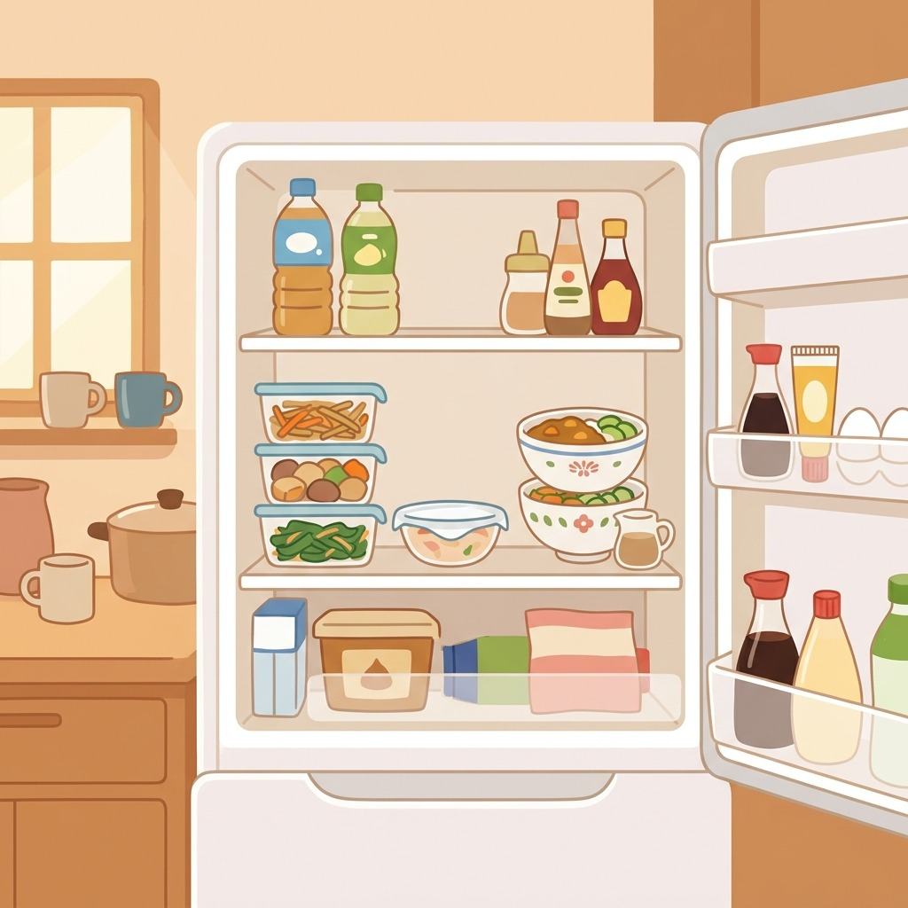

冷蔵庫がぐちゃぐちゃ問題
定位置を決めれば探さない・埋もれない

1上段は軽くて背の高い物
見下ろす位置なので、飲み物や背の高い容器をまとめて置くと出し入れしやすい。

2真ん中は「今週食べる」棚
目線の高さは一番見える場所。使いかけや消費期限が近い物をここに集めておく。

3トレーで引き出し化
浅いトレーに小分けして奥まで引き出せば、奥の物が埋もれにくくなる。

4ドアポケットは高さで分ける
背の高い物は下、小瓶やチューブは上。倒れにくく、一目で残りが分かる。

51列だけ空けておく
作り置きや来客の差し入れ用に空き場所を作ると、詰め込みで崩れるのを防げる。
毎日のくらしメモは Instagram で更新中
Instagram をフォロー※イラストはAIで作成しています